การประเมินหนึ่งรอบมีขั้นตอนเรียงตามลำดับ ใบประเมินของคุณจะเดินทางผ่านแต่ละขั้นจนจบ แต่ละคนเห็นและทำได้เฉพาะขั้นของตัวเอง
กรอบสีเข้ม = ขั้นที่คู่มือนี้อธิบาย ส่วนขั้น 7–8 เป็นงานของ HR และผู้บริหาร ซึ่งมีคู่มือแยกต่างหาก
| คะแนนที่เห็น | ความหมาย |
|---|---|
| Y คะแนนผลงาน | มาจากการให้เกรด A+ ถึง C ในปัจจัยประเมิน 10 ข้อ (ผู้ประเมินแต่ละระดับช่วยตรวจ) |
| Z คะแนนเวลาทำงาน | ระบบคำนวณเองจากข้อมูลสาย กลับก่อน ลา ขาดงาน (จาก HRGO) ไม่ต้องกรอก |
| KPI | มีเฉพาะรอบที่บริษัทกำหนดสัดส่วน KPI และคุณมี KPI รายบุคคล |
| X คะแนนรวม | X = Y + Z (+ KPI) ใช้จัดอันดับเพื่อตัดเกรด |
| เกรด A–E | ตัดโดย HR ตามอันดับในกลุ่มเดียวกัน ระบบซ่อนเกรดจนกว่าผู้บริหารอนุมัติขั้นสุดท้าย |
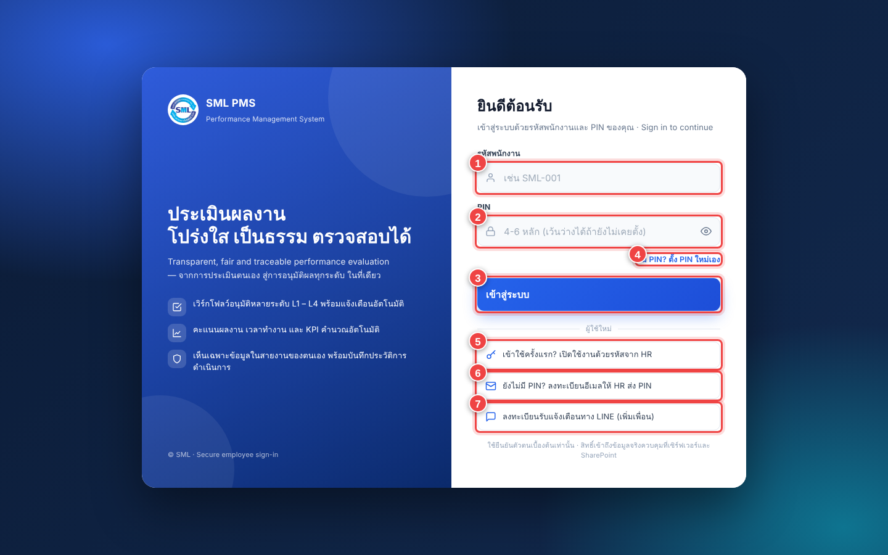
ถ้า HR แจกรหัสเปิดใช้งาน (รูปแบบ XXXX-XXXX-XXXX) ให้กด "เข้าใช้ครั้งแรก" แล้วทำตามนี้
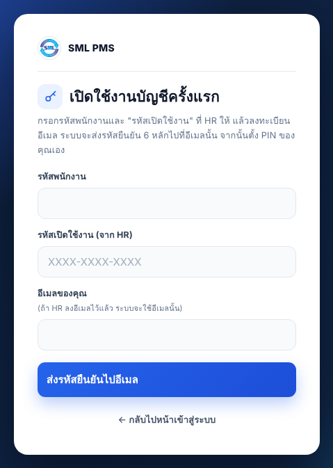
กด "ลืม PIN? ตั้ง PIN ใหม่เอง" กรอกรหัสพนักงาน ระบบส่งรหัส OTP ไปที่อีเมลที่ HR ลงทะเบียนไว้ แล้วตั้ง PIN ใหม่ได้เลย ถ้าไม่มีอีเมลในระบบหรืออีเมลผิด ให้แจ้ง HR
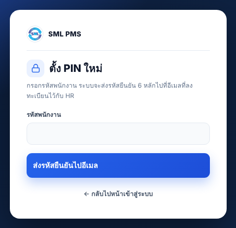
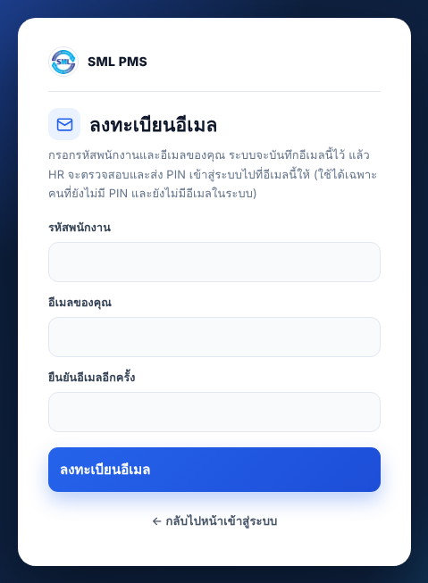
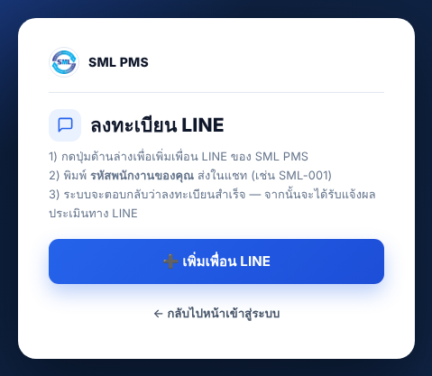
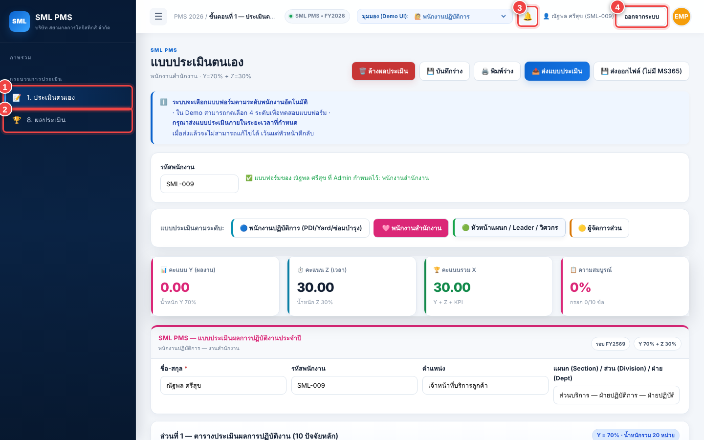
1 กด "1. ประเมินตนเอง" แล้วกรอกรหัสพนักงาน ระบบจะเลือกแบบฟอร์มที่ HR กำหนดให้คุณโดยอัตโนมัติ (ไม่ต้องเลือกเอง)
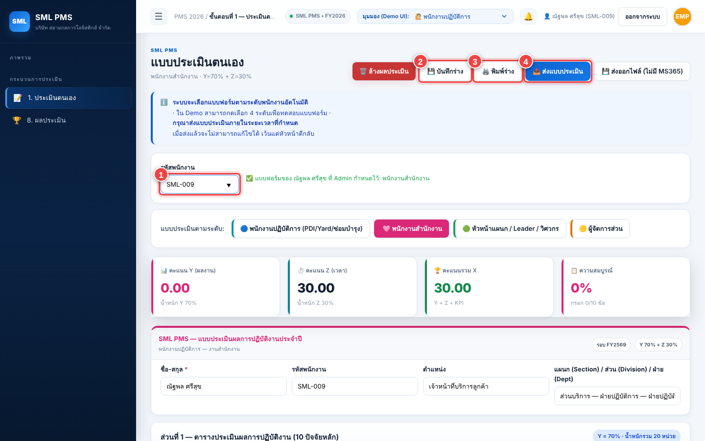
2 เลือกเกรดทีละข้อ ในปัจจัยประเมิน 10 ข้อ ตั้งแต่ A+ (ดีเยี่ยม) ถึง C (ต้องปรับปรุง) ตัวเลขด้านขวาคือคะแนนที่ได้ และคะแนนรวมด้านบนจะอัปเดตทันที
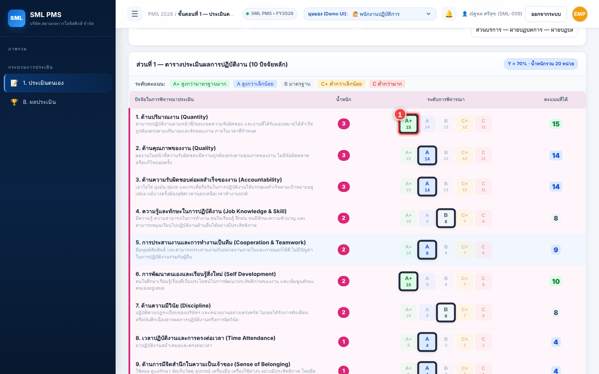
3 ดูสรุปคะแนนด้านบน และส่วน "รายละเอียดเวลาทำงาน (Z)" ซึ่งแสดงที่มาของคะแนนเวลา เช่น จำนวนครั้งที่สาย วันลา วันขาด (ระบบดึงจากข้อมูล HRGO ของ HR ถ้าข้อมูลไม่ตรงให้แจ้ง HR)
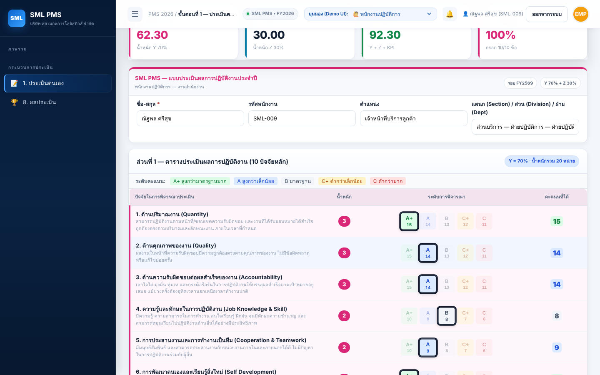
4 เขียนจุดเด่นและสิ่งที่อยากพัฒนา (ช่วยให้หัวหน้าเข้าใจคุณมากขึ้น) แล้วกด "บันทึกร่าง" ได้ตลอด จะกลับมาแก้ภายหลังก็ได้
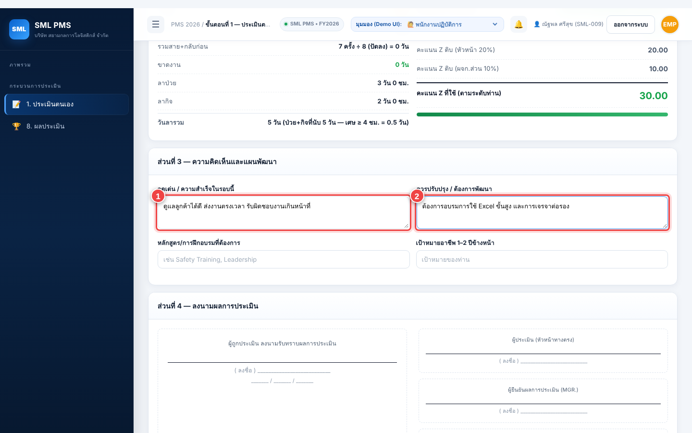
5 เมื่อพร้อมกด "ส่งแบบประเมิน" ตรวจคะแนนรวม ชื่อหัวหน้าที่ระบบจะส่งถึง แล้วกด "ยืนยันส่ง"
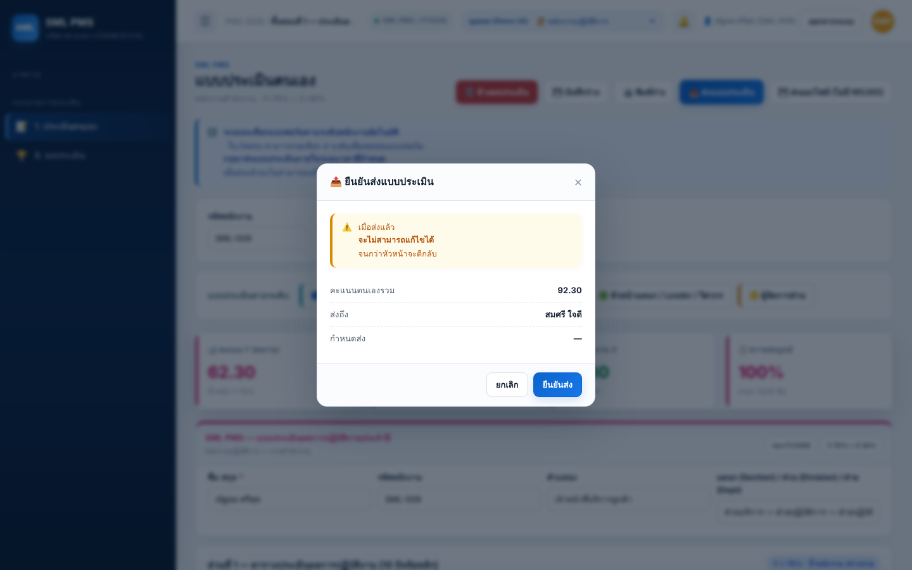
หัวหน้าอาจตีกลับให้คุณแก้ไข (ถอยกลับหนึ่งขั้นเท่านั้น) คุณจะเห็นกรอบสีเหลืองพร้อมเหตุผลที่ถูกตีกลับ คะแนนเดิมยังอยู่ ปุ่มส่งจะถูกล็อกไว้ ต้องแก้คะแนนอย่างน้อย 1 ข้อ หรือกด "ยืนยันว่าตรวจสอบแล้ว" (ต้องพิมพ์เหตุผลที่ยืนยันตามเดิม) จึงส่งใหม่ได้ และผู้ประเมินเดิมจะได้รับแจ้ง
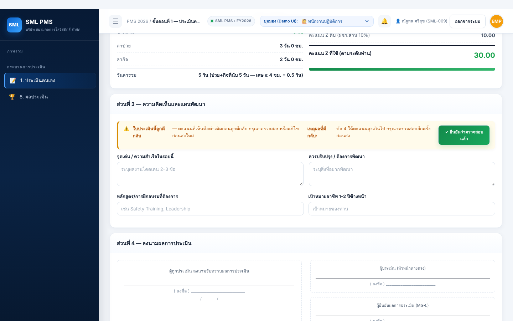
เมื่อ GM อนุมัติและกดส่งผล คุณจะได้รับอีเมล/LINE แจ้ง ให้เข้าเมนู "8. ผลประเมิน" เพื่อดูคะแนนผลงาน (Y) เวลาทำงาน (Z) และคะแนนรวม (X) ส่วนเกรดจะแสดงเป็น 🔒 จนกว่าผู้บริหารอนุมัติขั้นสุดท้าย
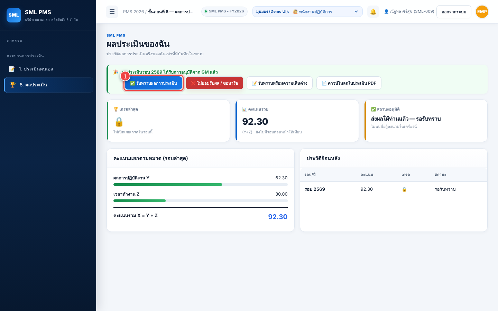
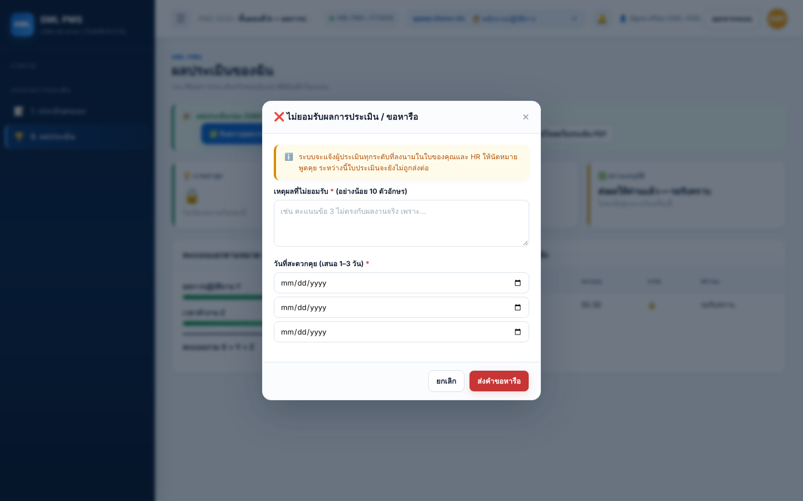
ตำแหน่งหัวหน้าในระบบมี 4 ระดับ ซึ่ง HR กำหนดไว้ในข้อมูลของพนักงานแต่ละคน: L1 หัวหน้าหน่วย → L2 หัวหน้าแผนก → L3 ผู้จัดการส่วน → L4 GM คุณจะเห็นเฉพาะพนักงานในสายของคุณเท่านั้น ถ้าสายไหนไม่มีผู้ประเมิน ระบบจะข้ามขั้นนั้นให้อัตโนมัติ
| ระดับ | เมนูที่ใช้ | หน้าที่ |
|---|---|---|
| L1 หัวหน้าหน่วย | 2. ประเมินทีมงาน | ให้คะแนนรอบแรกแก่ลูกทีม |
| L2 หัวหน้าแผนก | 3. สอบทานหัวหน้าแผนก | ตรวจคะแนนที่ L1 ส่งมา อนุมัติหรือตีกลับ |
| L3 ผู้จัดการส่วน | 4. สอบทานผู้จัดการส่วน | ตรวจคะแนนที่ L2 อนุมัติแล้ว |
| L4 GM | 5. อนุมัติ GM | อนุมัติ แล้วกด "ยืนยันส่งผลให้พนักงาน" |
หน้านี้แสดงรายชื่อลูกทีมตรง ๆ พร้อมสถานะ ปุ่ม "ประเมิน" เปิดฟอร์มให้คะแนน ส่วน "ดูแบบฟอร์ม" ใช้ดูใบที่ส่งไปแล้ว (แก้ไม่ได้)
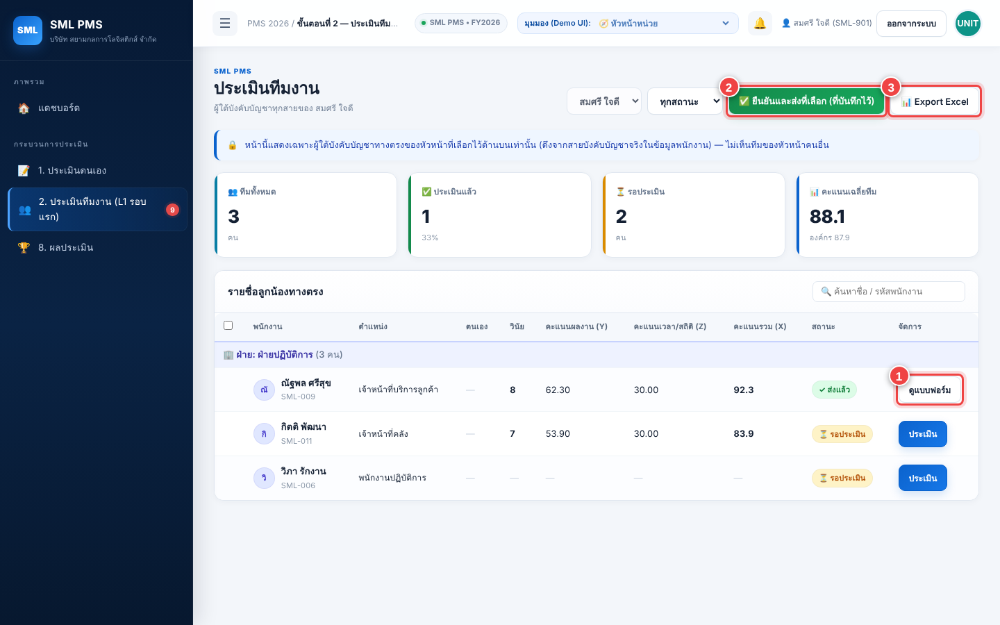
ในฟอร์ม ให้ดูข้อมูลเวลาทำงานของพนักงานด้านบนก่อน แล้วเลือกเกรดทีละข้อ (ถ้าพนักงานประเมินตนเองไว้แล้ว คะแนนของเขาจะแสดงให้เห็น คุณปรับตามความเห็นของคุณได้) พร้อมเขียนความเห็น
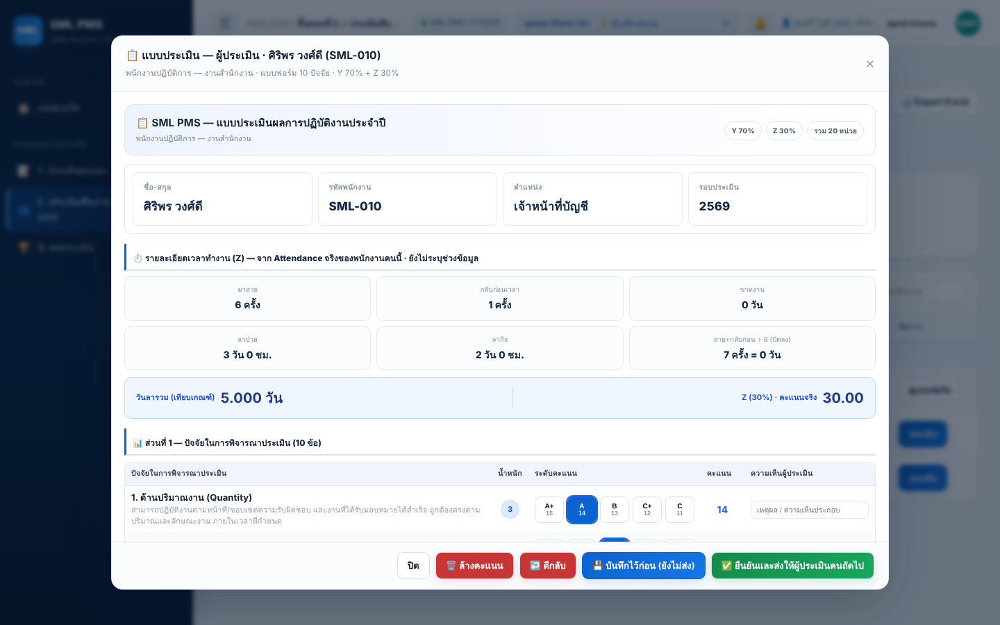
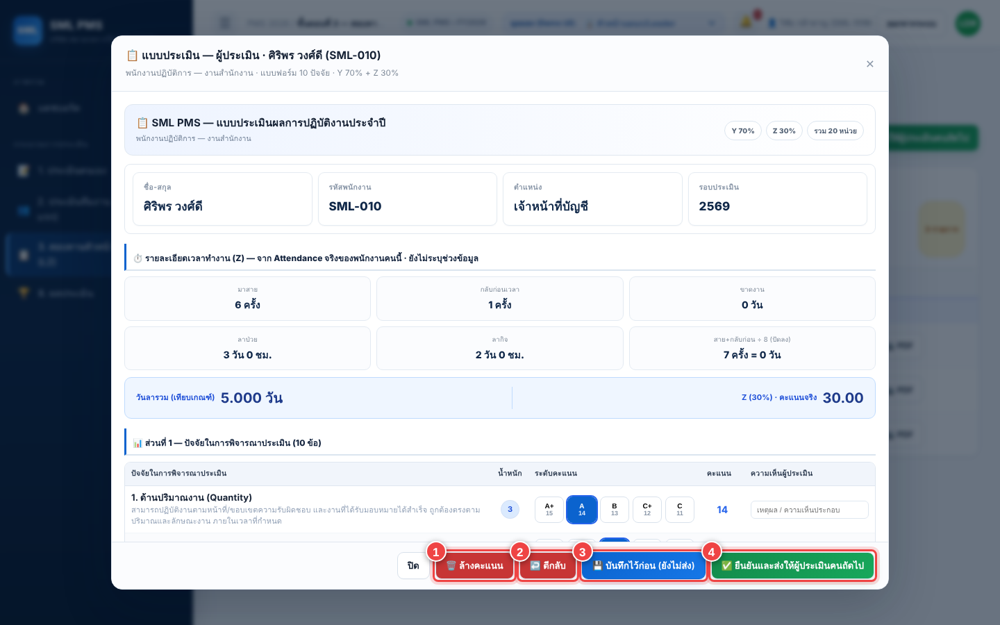
ตัวเลขสีแดงข้างเมนูคือจำนวนใบที่รอคุณ หน้านี้แสดงรายชื่อพนักงานในสายของคุณ พร้อมคะแนน Y, Z, X เรียงจากคะแนนรวมสูงไปต่ำ สามารถกรองตามฝ่าย ส่วน แผนก กลุ่มงาน และเลือกมุมมอง "แยกตามฝ่าย" หรือ "รวมทั้งบริษัท" ได้
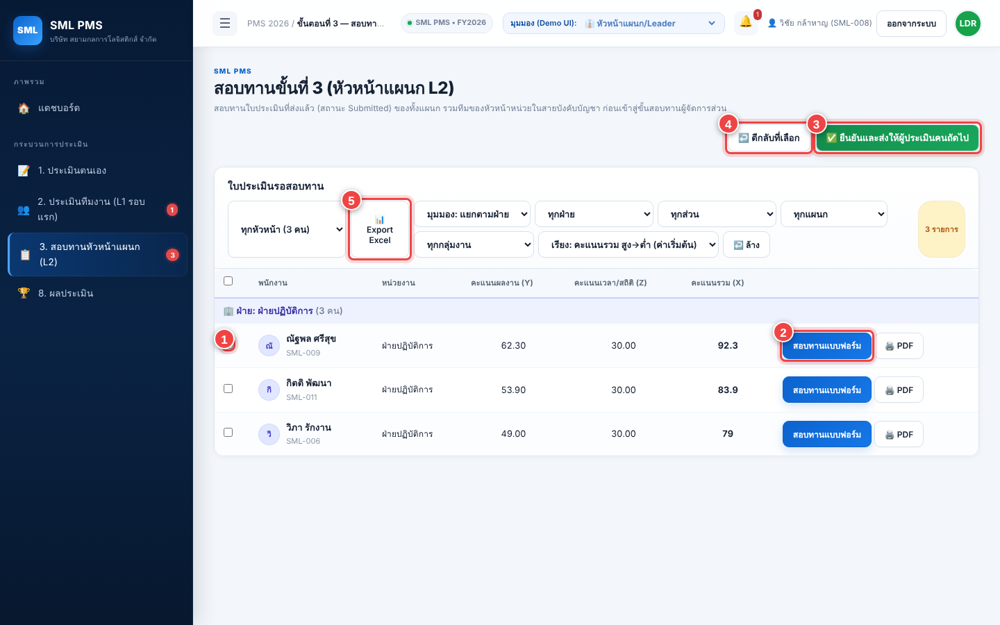
ถ้าใบเคยถูกตีกลับมาก่อน ระบบจะให้คุณแก้คะแนนหรือพิมพ์เหตุผลที่ยืนยันตามเดิมก่อนส่งต่อ แต่ละระดับจะเห็นเฉพาะใบที่ถึงขั้นของตัวเอง ใบของคนที่ยังมาไม่ถึงจะขึ้น "⏳ รอผลประเมิน"
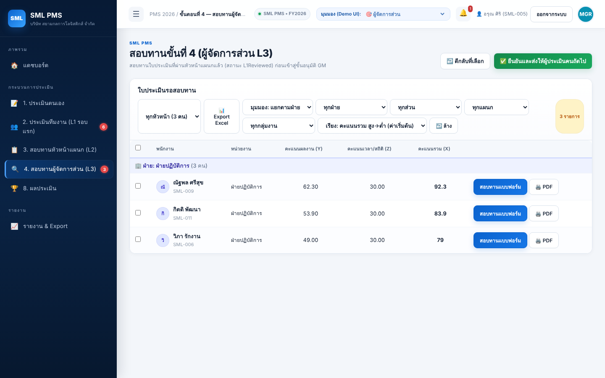
กระดิ่งมุมขวาบนบอกงานที่รอคุณ เช่น จำนวนใบรอสอบทาน กดที่รายการเพื่อไปหน้านั้นได้เลย
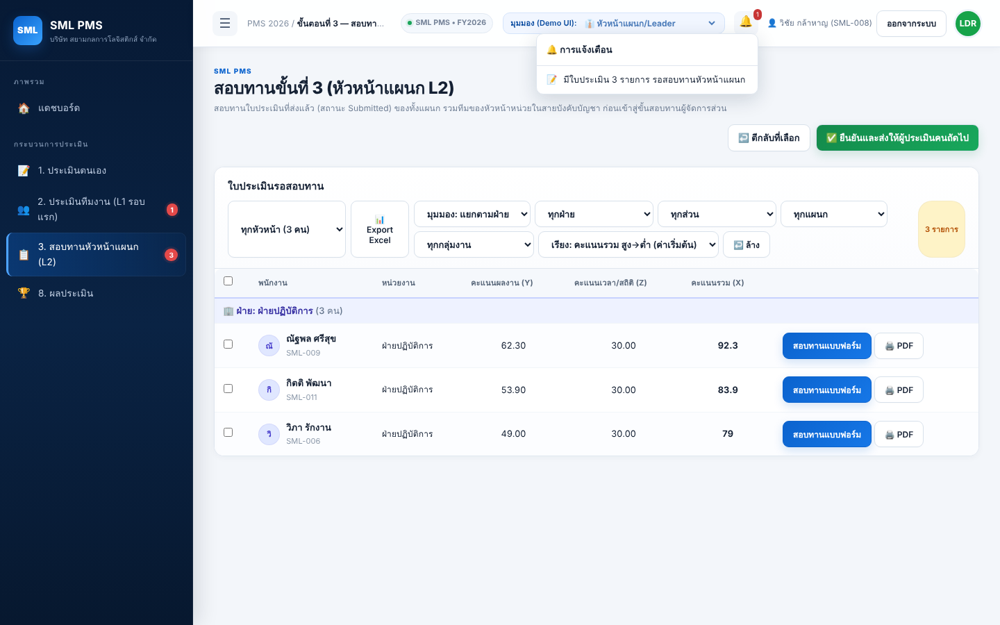
GM ติ๊กใบที่ผ่านการสอบทานแล้ว กด "อนุมัติที่เลือก" จากนั้นใบจะไปอยู่ในตาราง "ผล GM อนุมัติแล้ว — ยืนยันส่งผลให้พนักงาน" ด้านล่าง ให้กด "ยืนยันส่งผลให้พนักงาน" ระบบจึงจะแจ้งพนักงานทางอีเมล/LINE พร้อมคะแนน (เกรดยังล็อกอยู่) และพนักงานจึงเข้าดูผลและรับทราบได้
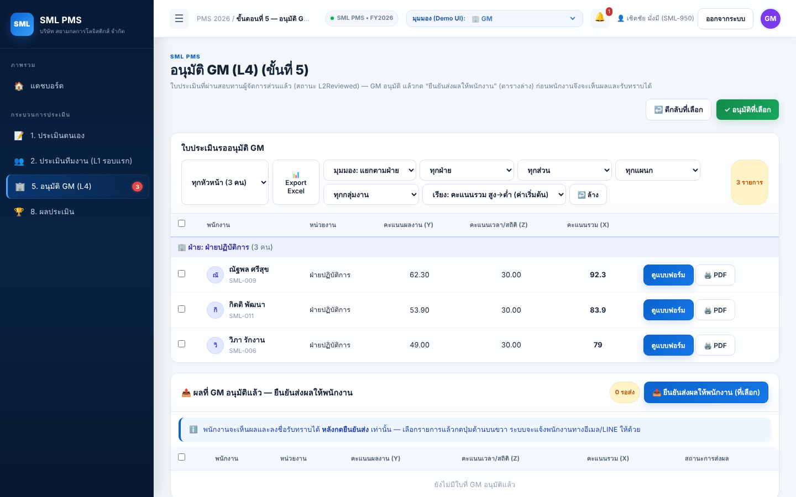
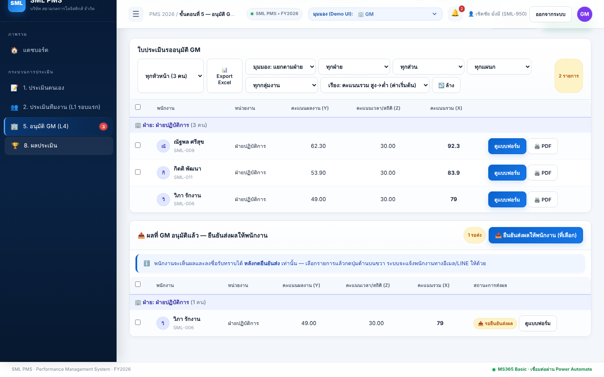
แดชบอร์ดแสดงความคืบหน้าของคนในสายคุณ แต่ละขั้นมีกี่คน เสร็จสมบูรณ์เท่าไร ค้างกี่คน ช่วยให้ตามงานได้ง่าย
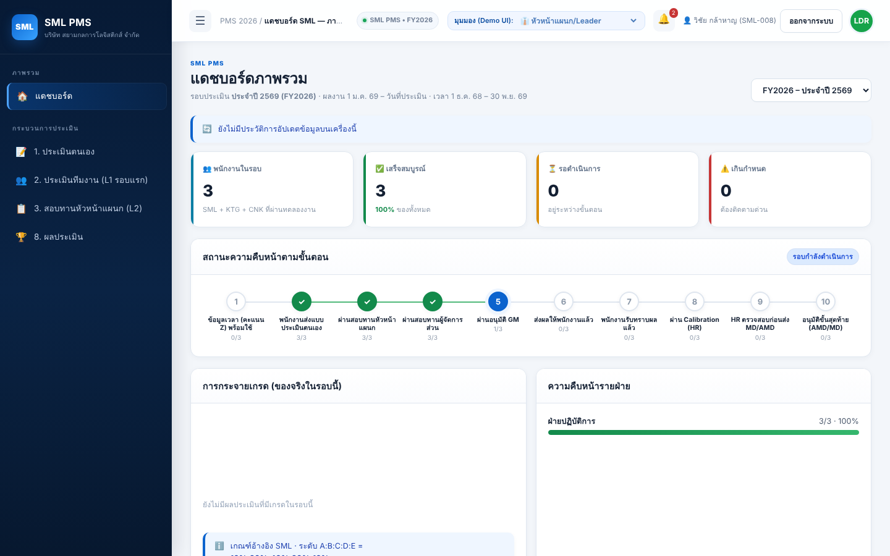
| ปัญหา | วิธีแก้ |
|---|---|
| เข้าสู่ระบบไม่ได้ / PIN ผิด | ลอง "ลืม PIN" ตั้งใหม่เอง ถ้าผิดครบ 5 ครั้งจะถูกล็อก 15 นาที รอแล้วลองใหม่ หรือแจ้ง HR |
| ขึ้นว่าระบบยังไม่เปิดให้บริการ | HR ปิดระบบชั่วคราว (เช่น อัปเดตระบบ หรือยังไม่ถึงรอบประเมิน) รอเวลาที่แจ้งไว้ในหน้าจอ |
| ประเมินตนเองไม่ได้ ปุ่มเป็นสีเทา | ยังไม่ได้รับสิทธิ์ประเมินตนเอง ติดต่อ HR |
| ไม่พบใบประเมิน/หน้าว่างทั้งที่ส่งไปแล้ว | กดปุ่ม "Sync จาก Excel แล้วลองใหม่" ในกรอบเตือน หรือรีโหลดหน้าและรอสักครู่ |
| คะแนนเวลาทำงาน (Z) ไม่ตรงกับที่ควรเป็น | แจ้ง HR ให้ตรวจข้อมูลสาย/ลา/ขาดของคุณ ระบบคิดสาย 8 ครั้ง = 1 วัน (เศษตัดทิ้ง) ลากิจ+ลาป่วย เศษน้อยกว่า 4 ชม. ไม่นับ 4 ชม. ขึ้นไปนับครึ่งวัน ขาดงานนับ 3 เท่า |
| ทำไมไม่เห็นเกรด | เกรดเป็นความลับจนกว่าผู้บริหารอนุมัติขั้นสุดท้าย ดูได้เมื่อ HR เปิดให้พนักงานเห็นเกรด |
| กดส่งผิดคน/ใบผิด | ส่งแล้วแก้เองไม่ได้ ให้แจ้งผู้ประเมินขั้นถัดไปให้ตีกลับ หรือแจ้ง HR |
| ไม่เห็นลูกทีม / รายชื่อไม่ครบ (หัวหน้า) | ชื่อหัวหน้าในข้อมูลพนักงานอาจยังไม่ถูกต้อง แจ้ง HR ให้ตรวจสายบังคับบัญชา L1–L4 |
| ใช้เครื่องที่ใช้ร่วมกัน | กด "ออกจากระบบ" ทุกครั้งที่ใช้เสร็จ |
| เมนู | พนักงาน | L1 หน่วย | L2 แผนก | L3 ส่วน | L4 GM |
|---|---|---|---|---|---|
| แดชบอร์ด | – | ✔ | ✔ | ✔ | ✔ |
| 1. ประเมินตนเอง | ✔ | ✔ | ✔ | ✔ | ✔ |
| 2. ประเมินทีมงาน | – | ✔ | ✔ | ✔ | ✔ |
| 3. สอบทานหัวหน้าแผนก | – | – | ✔ | – | – |
| 4. สอบทานผู้จัดการส่วน | – | – | – | ✔ | – |
| 5. อนุมัติ GM | – | – | – | – | ✔ |
| 8. ผลประเมิน | ✔ | ✔ | ✔ | ✔ | ✔ |
หมายเหตุ: เมนูที่เห็นอาจต่างจากตารางนี้เล็กน้อยตามที่ HR กำหนดสิทธิ์ และคนที่ถูกระบุชื่อเป็นผู้ประเมินในสายของพนักงานจะเห็นเมนูของขั้นนั้นด้วย แม้ตำแหน่งในระบบจะต่างกัน ปัญหาการใช้งาน ติดต่อ HR